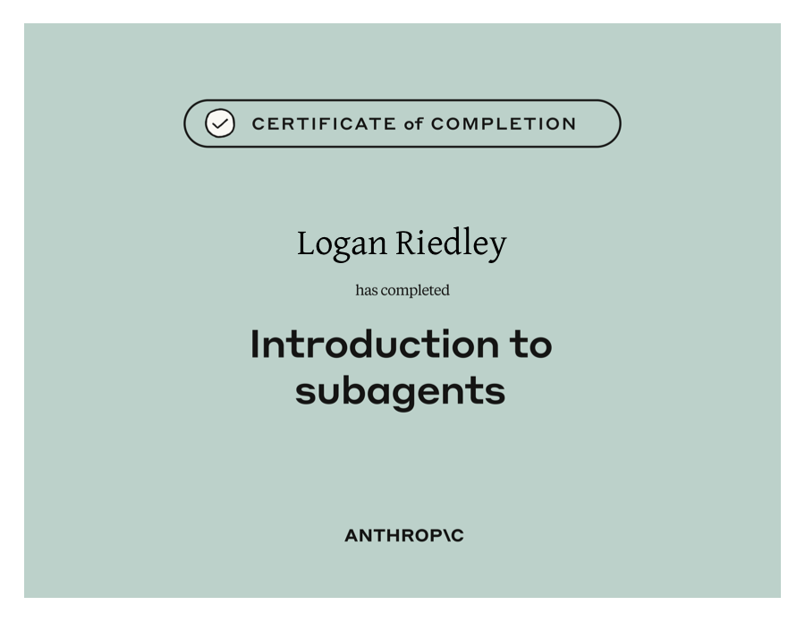
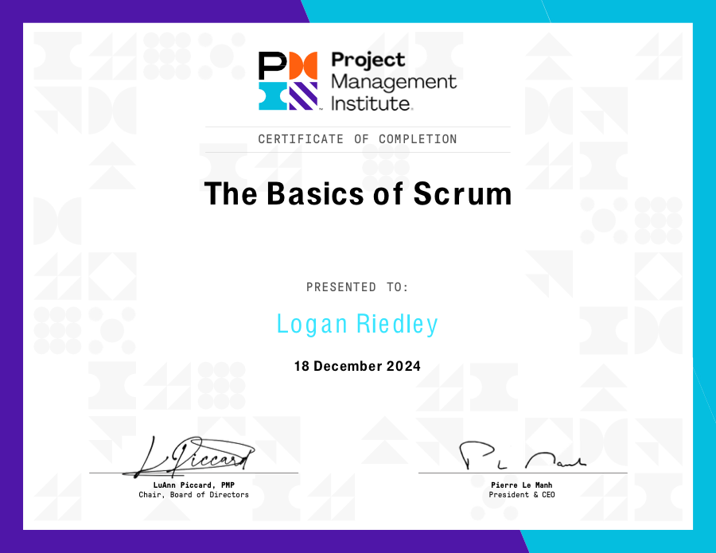
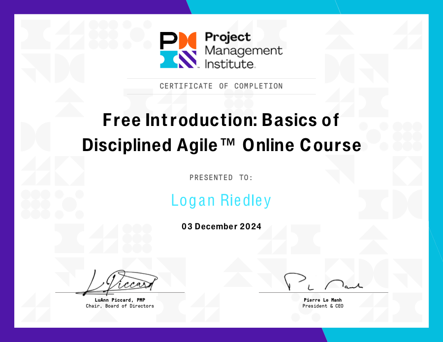
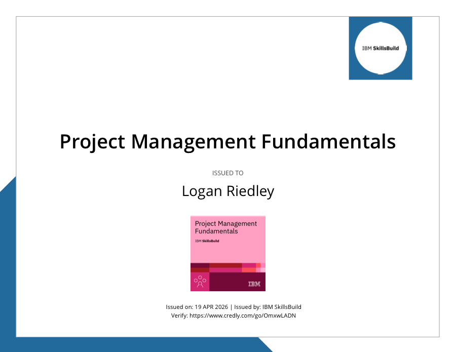
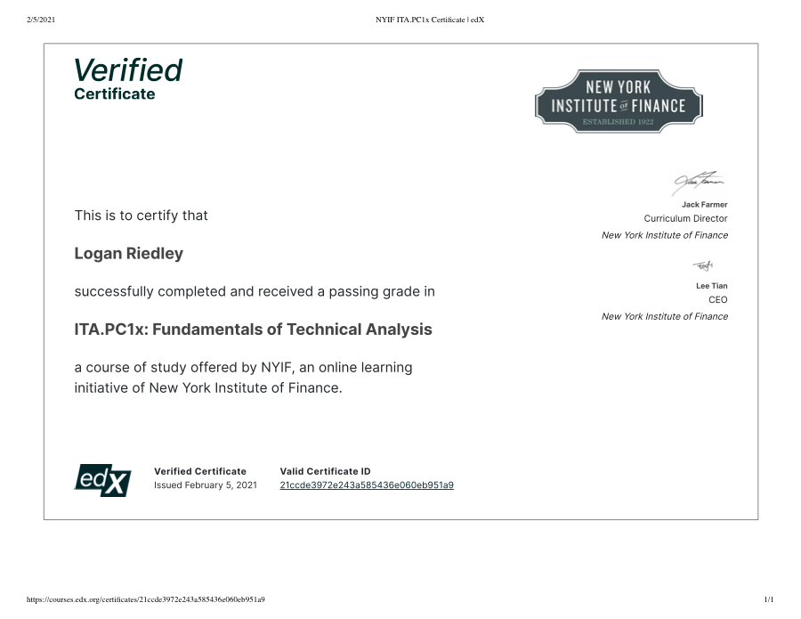
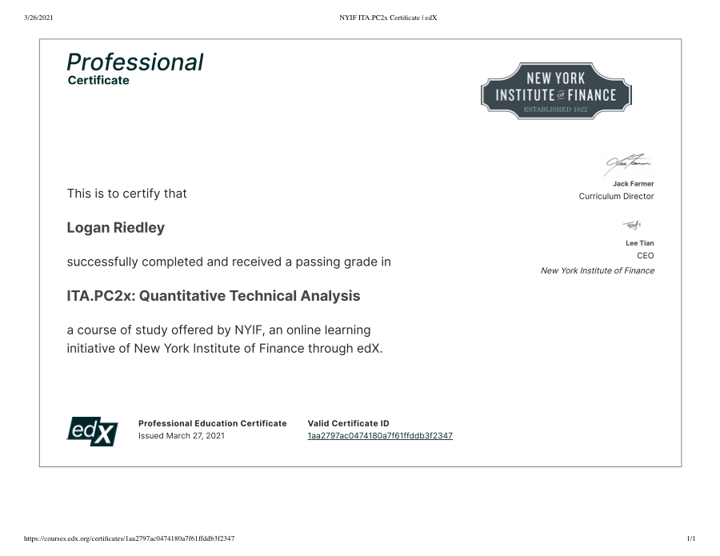
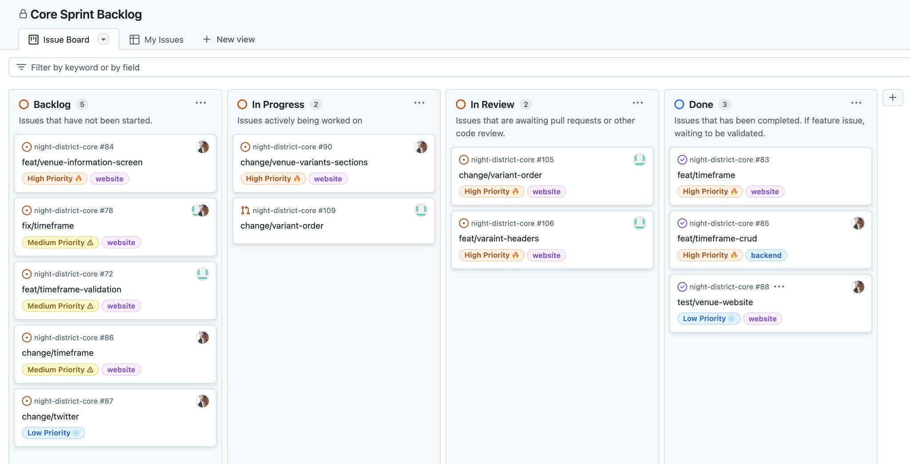
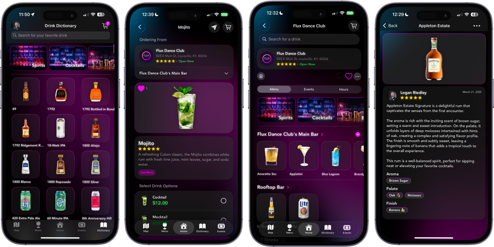

Skills
What I Bring to the Table
Three courses: product, technical, and hospitality. Each skill is mapped to where I've actually used it, not a self-rated bar.
Certifications
-
Adobe XD UI/UX Design
Udemy · July 2023
Adobe XD fundamentals for UI/UX design: wireframes, prototyping, and design systems.
-
Flutter Development Bootcamp with Dart
Udemy · August 2023
Flutter and Dart from the ground up: the stack behind my UI/UX work on Malsi.
-
Git & GitHub Bootcamp
Udemy · December 2023
Git workflows and GitHub collaboration, from branching to pull requests.
-

Introduction to Subagents
Anthropic · 2026
Building and orchestrating Claude Code subagents for multi-step engineering work.
-
CAPM® Exam Prep Course
Project Management Institute · January 2025
PMI-authorized prep for the CAPM credential, covering PMBOK® processes and methodology.
-

The Basics of Scrum
Project Management Institute · December 2024
Scrum roles, events, and artifacts: the framework I run at Night District.
-

Basics of Disciplined Agile™
Project Management Institute · December 2024
An introduction to PMI's Disciplined Agile toolkit for choosing the right way of working.
-
Generative AI Overview for Project Managers
Project Management Institute · December 2024
Applying generative AI tools to project planning, risk, and delivery.
-

Project Management Fundamentals
IBM SkillsBuild · April 2026
Core project management principles: scope, schedule, and stakeholder management.
-
Certificate of Mixology
The Academy of Bartending · May 2022
Classic cocktail technique and bar service, ahead of building Derby City Pizza's drink menu.
-
Certified Beer Server
Cicerone Certification Program · December 2025
Beer styles, service, and draft quality: the Cicerone program's entry-level credential.
-

Fundamentals of Technical Analysis
New York Institute of Finance · February 2021
Reading price charts and market trends to inform trading decisions.
-

Quantitative Technical Analysis
New York Institute of Finance · March 2021
Statistical methods applied to technical trading strategies.
Product & Delivery
-
Project Management
CAPM-certified and Scrum-trained. As Product Manager, I take the Night District guest app from concept to a working full-stack application, writing the roadmap and leading the team to carry it out.
-
Agile Development
Run sprint planning, daily stand-ups, and retrospectives for the Night District team, 2021 to present.
-
Backlog Management & Prioritization
Organize and prioritize the product and sprint backlog to keep forecasts and resourcing accurate.

-
Cross-Functional Leadership
Align developers, designers, and marketers around a shared product vision at Night District.
Technical
-
Swift & SwiftUI
Built the Night District guest app from an empty Xcode project to a shipped App Store listing.

-
Flutter & Dart
Led UI/UX development on Malsi, a social media app live on the App Store.
-
Git & GitHub
Open-sourced Bar Ticket, a macOS tool I built and maintain publicly.
-
Figma & Adobe XD
Designed the interfaces behind Night District's app and this site's own layout.
Operations & Hospitality
-
Floor & Bar Operations
General Manager at Black Rabbit Speakeasy and Derby City Pizza, running service night to night.
-
Beverage Program Development
Planned and launched a 6-cocktail menu at Derby City Pizza: recipes, bartender training, and quality standards.
-
Toast POS Execution
Coach front-of-house and bar teams on POS execution and service standards at Black Rabbit Speakeasy.
-
Team Leadership Under Pressure
Led a Navy culinary team feeding 250-plus people daily as a Culinary Specialist.